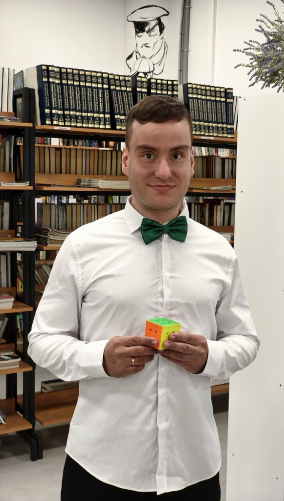

Создаю проекты на стыке культуры, образования и технологий
С 2014 года увлекаюсь спидкубингом, с 2015 — обучаю сборке кубика Рубика. Работаю в Парголовской библиотеке. Более двух лет работал педагогом дополнительного образования в школе: вёл спидкубинг, шахматы, 3D-моделирование и прототипирование, легоконструирование, детское чтение. Работал с детьми с ОВЗ. Участник VK Fest, создаю мозаики из тысяч кубиков. Разработал настольную игру «Книжные грани». Автор социального проекта «Кубик добра», который вошёл в Топ-100 лучших библиотечных практик России.
Настольная игра-ходилка, объединяющая литературу, логику и спидкубинг.
knig-grani.ruСоциальный проект по обучению сборке кубика Рубика для людей с ОВЗ и бойцов в госпиталях. Признан одной из лучших библиотечных практик России (Топ-100, 99 баллов из 110).